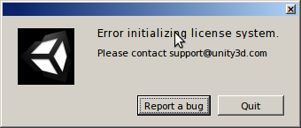

UbuntuでUnityを使えるようになるまで with Wine
{kind=link}
UbuntuでUnity(ゲームのほう)を動かすのに嵌ったのでメモ(主にWineで)
Wineで嵌りどころが多いのは今日に始まったことではないので、めげずに頑張りました。
バージョン情報
- Ubuntu 13.10 (Desktop)
- Unity 4.3.4
嵌まりポイントと共にインストール手順を。
新しいWineを使う
apt-get install wineで入るwineではdotnet20のインストールの時点でコケます。
Ubuntu13.10のapt-get install wineで入るwineは1.4(たしか)。
新しいUnity(4.3とか)を入れたい場合はwine1.7が必要。( wine - Can’t install dotnet - Ask Ubuntu )
wine - Can’t install dotnet - Ask Ubuntu
上記のURLにしたがって1.7をインストール。
$ sudo apt-get remove wine
$ sudo add-apt-repository ppa:ubuntu-wine/ppa
$ sudo apt-get update && sudo apt-get install wine1.7
Unityは32bit版で使う
シェルの設定ファイル(bashrc, zshrcなど)に32bit設定の変数を書いておく。
// WINEPREFIXは任意パス(自分はwine32にしている)
export WINEPREFIX=$HOME/wine32
export WINEARCH=win32
その後、winecfgコマンドを使うと、コンフィグ画面表示前にWINEPREFIXの場所にもろもろのファイルが生成される。
Unityに必要なパッケージをwinetricksを使ってインストール
guiでやりたい場合は以下のコマンドで開くGUIからインストールする。
winetricks --gui
Wineの公式に必要なパッケージについて記載があるので参考にする。
winetricksでインストール。
$ winetricks tahoma
$ winetricks d3dx9
$ winetricks dotnet20
$ winetricks corefonts
($ winetricks dotnet40)
($ winetricks forcemono)
()はoptional。
Unity(Windows版)インストーラーをダウンロードしてインストール
ここからダウンロードしてwineでインストール。
$ cd <ダウンロード先>
$ wine Unity****.exe
インストールするとデスクトップにアイコンができる。
起動するとエラー
このエラーでググると、この動画( How to install Unity3D 4 on Linux - YouTube )を見て解決している人がいた。
なにやらレジストリに’ProductID’というファイル(?)があります。(初期状態では存在しない)
追加してみます。
- $ winetricks –gui
- ‘Select the default wineprefix’を選択
- ‘Run regedit’を選択
- 右側のツリーで’HKEY_LOCAL_MASHINE>Software>Microsoft>Windows NT>CurrentVersion’を選択
- ここで右クリック、メニューの’新規>文字列値’を選択
- 名前を’ProductID’に変更
そうするとUnityが起動するようになりました。
新規プロジェクトがパスが不正だとかで作れない
一番はじめに出てくる新規作成画面で作成しようとすると、’specified path is valid unity’とエラーが発生します。
何故かどうやっても作成できません。
以下のリンクのDiscussionでは、
Unity: Downloading and Installing | Unity Cookie
Note
Hi, I’ve installed unity in wine as I am a linux user. When I make a new project I make a folder for it but I get an error: Specified path is not valid(should be a name of an nonexisting or empty directory)
Is this wine being unreliable or is there something wrong with what I am doing?
> Hi there- that’s a good question, I may just have to try it myself. It would be great to have Unity usable in Linux!
> For now, I would try a few trial-and-error fixes…first create the directory, then the project, create the directory via the “new project” dialogue, etc. It probably just Wine being a little finicky.
>> sorry, I should clarify what I said, I get the error when I make the directory in the new project dialogue. When I make it outside of the dialogue box I can’t create the project. :(
諦めて、既存のプロジェクトをWindowsのUnityからコピーしてきて起動しましょう。
既存のプロジェクト起動
やっと起動しました。
その後の嵌まりポイントがあるのかは未だ知りませんがUbuntu-WineでもUnityいけるようです。
“ubuntu unity”でググったときは、UIのほうばかり出てきてgameのほうを探してるときはかなりウザいですね。
他のバージョンでは試してませんが、現在の最新バージョン(多分)での検証でした。